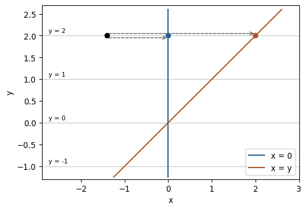
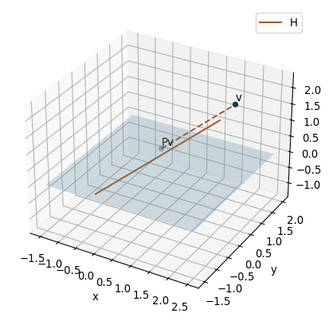

18 Module A — Structural Linear Algebra: Linear Maps, Decomposition, and Quotient Structures
Three sensors report three numbers. The third always reports the sum of the first two. Four input settings control the sensors. Given a reading, can you tell whether it is possible? If it is possible, what exactly can you recover about the settings? These are different questions. The first concerns a subspace of the output space. The second concerns whole families of points in the input space. We will calculate both and discover a linear bijection between the possible readings and the families of indistinguishable settings.
Work over a field \(F\) (usually \(\mathbb R\) or \(\mathbb C\)). Vectors in matrices are columns. Write \(\mathcal P_n\) for polynomials of degree at most \(n\), including zero. Finite dimension is assumed for dimension counts unless stated otherwise. The arguments about fibers, quotients and factorization will work without that assumption.
18.1 Session 1 — When can a list of numbers describe a polynomial?
A quadratic can be stored by its three coefficients or by its values at three distinct points. Why can either representation work, and why would four arbitrary readings be too many? To answer independently of any particular encoding, begin with the operations the encoding should respect.
From linear combinations to coordinates
A vector space is an abelian group \((V,+)\) with scalar multiplication \(F\times V\to V\) satisfying \(1v=v\), \((ab)v=a(bv)\), \((a+b)v=av+bv\), and \(a(v+w)=av+aw\). Thus finite sums \(\sum_i a_iv_i\) make sense, including the empty sum \(0\). Examples include matrices of fixed shape with entrywise operations, functions \(X\to F\) with pointwise operations, and polynomials with formal addition and scalar multiplication. A matrix unit \(E_{ij}\) has one entry equal to \(1\) and all others zero. The matrix units form a basis of \(F^{m\times n}\) because \(M=\sum_{ij}M_{ij}E_{ij}\) and comparison of entries forces every coefficient.
A subset \(U\subseteq V\) is a subspace if it contains \(0\) and contains \(au+bv\) for every \(u,v\in U\) and \(a,b\in F\). Necessity follows from the operations within \(U\). For sufficiency take \((a,b)=(1,1),(-1,0),(c,0)\) to obtain closure under addition, inverses and scaling. The identities between operations are inherited from \(V\). For instance the functions vanishing at a specified point form a subspace. Functions taking value \(1\) there fail the zero test.
Given an ordered list \(B=(v_1,\ldots,v_n)\), consider its synthesis map \[ S_B:F^n\to V,\qquad a\longmapsto\sum_{i=1}^n a_i v_i. \] Its range, the span, is a subspace by distributivity. Every subspace containing the list contains the entire span. The list is linearly independent if \(S_B(a)=0\) forces \(a=0\). Subtract two representations of the same vector. Their difference synthesizes zero, so independence is precisely uniqueness wherever representations exist. A basis is an independent spanning list. Thus a basis makes \(S_B\) bijective, and the coordinate column \([v]_B=S_B^{-1}(v)\) is defined for every \(v\). Independence concerns the list, including repetitions. A space admitting a finite spanning list is finite-dimensional.
Why do all bases have the same size?
Theorem 18.1 Finite exchange. Let \(s_1,\ldots,s_n\) span \(V\) and let \(u_1,\ldots,u_k\) be independent. Then \(k\le n\), and \(k\) of the spanning vectors can be replaced by the \(u_i\) while preserving the span.
Proof. Suppose \(u_1,\ldots,u_j\) have been inserted and the other entries are surviving generators. Expand \(u_{j+1}\) in this spanning list. Some surviving \(s\) has a nonzero coefficient, since otherwise \(u_{j+1}\) is a combination of its predecessors. Solve the expansion for that \(s\) by dividing by its coefficient. Replacing \(s\) by \(u_{j+1}\) therefore preserves the span. Starting with \(j=0\), the process takes one surviving entry at each step. If all \(n\) entries have been replaced, their span is \(V\) and an additional independent \(u\) is impossible.
Delete any redundant vector from a finite spanning list until independence holds. This produces a basis, including the empty basis for the zero space. Applying exchange to two bases in both orders shows their lengths agree. This integer is \(\dim V\). To extend an independent list, scan a spanning list for \(V\), adjoining each vector outside the span accumulated so far. Each addition preserves independence (a dependence with nonzero new coefficient would solve for the new vector). The final list spans because it contains or generates each scanned entry. A subspace of an \(n\)-dimensional space has a basis as well. Repeatedly choose a vector outside the span within that subspace. Exchange bounds the number of choices by \(n\).
In \(\mathcal P_2(\mathbb R)\), the bases \((1,t,t^2)\) and \((1,t-1,(t-1)^2)\) give \(t^2\) the coordinates \((0,0,1)^T\) and \((1,2,1)^T\). Expanding in powers of \(t\) proves the second list independent by successively comparing leading terms, and the same triangular calculation expresses the monomials in its span. There is no coordinate triple until the encoding is specified.
Checkpoint. Evaluation at three distinct real points is injective on \(\mathcal P_2\) because a nonzero quadratic has at most two distinct roots. Can you construct the polynomial for arbitrary readings? For points \(s_i\), form \(\ell_i(t)=\prod_{j\ne i}(t-s_j)/(s_i-s_j)\). Evaluate \(\sum_i y_i\ell_i\) at each point. A fourth reading must equal the value of this already determined polynomial.
18.2 Session 2 — How do we transport a calculation between bases?
A linear map \(T:V\to W\) obeys \(T(av+bw)=aT(v)+bT(w)\). It sends zero to zero, preserves differences, and by induction preserves every finite linear combination. The domain tells us which combinations may be formed. The codomain specifies the target in which attainable outputs are compared.
Prescribing images. Choose a basis \(B=(b_j)\) of \(V\) and any \(w_j\in W\). There is exactly one linear map with \(Tb_j=w_j\). Indeed, define \(T(\sum_j a_j b_j)=\sum_j a_jw_j\). Uniqueness of coordinates makes this a function, addition and scaling of coordinates give linearity, and linearity forces this formula for any proposed map. A redundant generating family does not allow arbitrary assignments. Every relation among generators must also hold among their proposed images.
With an ordered target basis \(C\), put \(A=S_C^{-1}TS_B\). This map between coordinate spaces has columns \([Tb_j]_C\), since \(S_B e_j=b_j\). Thus \([Tv]_C=A[v]_B\). For \(L:W\to Z\) with target basis \(H\), inserting \(S_CS_C^{-1}\) gives \[ [LT]_{H\leftarrow B}=[L]_{H\leftarrow C}[T]_{C\leftarrow B}. \] Matrix multiplication composes descriptions whose middle coordinates agree. A bijective linear map is an isomorphism. Its inverse is linear since \(T(au+bv)=aTu+bTv\) gives the unique preimage of the right-hand side. Two finite-dimensional spaces are isomorphic exactly when their dimensions agree. An isomorphism carries bases to bases, and matching two bases defines a bijection by the preceding construction.
Change the encoding, then differentiate
Let \(P=S_B^{-1}S_{B'}\) and \(Q=S_C^{-1}S_{C'}\). Their columns express new basis vectors in old coordinates. The direction matters. Starting with new coordinates, convert the input, apply the old matrix, and convert the result back: \[ [T]_{C'\leftarrow B'}=Q^{-1}AP. \] For an endomorphism \(V\to V\) with the same basis on both sides, \(Q=P\), giving similarity. A rectangular map allows independent source and target changes. Rank survives both changes because the coordinate maps are bijective. For an endomorphism the eigenvalue equation also survives similarity, since \(Ax=\lambda x\) becomes \((P^{-1}AP)(P^{-1}x)=\lambda P^{-1}x\).
Consider \(D:\mathcal P_2(\mathbb R)\to\mathcal P_1(\mathbb R)\), \(Dp=p'\). In monomial bases, \[ A=\begin{pmatrix}0&1&0\\0&0&2\end{pmatrix}. \] Take \(B'=(1,t-1,(t-1)^2)\) and keep the monomial target. Differentiating the new basis gives columns \((0,0)^T,(1,0)^T,(-2,2)^T\). Alternatively multiply \[ A\begin{pmatrix}1&-1&1\\0&1&-2\\0&0&1\end{pmatrix} =\begin{pmatrix}0&1&-2\\0&0&2\end{pmatrix}. \] Applying this to \((1,2,1)^T\) gives \((0,2)^T\), precisely \(D(t^2)=2t\). If the target is shifted as well, the last column becomes \((0,2)^T\) in \((1,t-1)\). The output polynomial is the same in either encoding.
Checkpoint. For the ordinary matrix \(\operatorname{diag}(2,3)\) use the new basis \((e_2,e_1)\) on both sides. Its matrix becomes \(\operatorname{diag}(3,2)\). Swapping only the input basis would instead give columns \((0,3)^T,(2,0)^T\). Which represents similarity?
18.3 Session 3 — What can one reading determine?
Define \(K=\ker T=\{x:Tx=0\}\) and \(I=\operatorname{im}T=\{Tx:x\in V\}\). Both are subspaces. For \(K\), applying \(T\) to any linear combination of its members gives zero. For \(I\), combine preimages before applying \(T\). Now subtract two candidate inputs: \[ Tx=Ty\quad\Longleftrightarrow\quad T(x-y)=0\quad\Longleftrightarrow\quad x-y\in K. \] Hence \(T\) is injective exactly when \(K=\{0\}\) (compare each kernel vector with zero). It is surjective exactly when \(I=W\), by the meaning of surjectivity. For \(b\in I\) choose \(Tx_p=b\). The displayed equivalence proves in both directions that \[ T^{-1}(\{b\})=x_p+K. \] This fiber is an affine space, a translate with direction space \(K\). Translating the origin to a different solution does not change the fiber. For \(b\ne0\) the fiber excludes the zero vector. For \(b\notin I\) it is empty.
The inclusion \((u,v)\mapsto(u,v,0)\) into \(F^3\) is injective and misses \(e_3\). The map \((u,v,w)\mapsto(u,v)\) onto \(F^2\) is surjective and loses an entire coordinate. The map \((u,v,w)\mapsto(u,0)\) into \(F^2\) has both a nontrivial kernel and an unattainable output. Restricting its codomain to its image changes its surjectivity.
Theorem 18.2 Rank–nullity. If \(\dim V<\infty\), then \(\dim V=\dim K+\dim I\). These last two dimensions are the nullity and the rank, respectively.
Proof. Extend a kernel basis \(k_1,\ldots,k_s\) to a domain basis by adjoining \(h_1,\ldots,h_r\). Expand any input in this basis and apply \(T\). Only the \(Th_i\) survive, so they span \(I\). If \(\sum_i c_iTh_i=0\), then \(\sum_i c_i h_i\) belongs to \(K\). Expressing that vector in the \(k\)’s gives a relation in the full basis. All \(c_i\) vanish. Thus the \(Th_i\) form an image basis, and the domain basis has \(s+r\) members.
The proof also constructs a smaller inverse problem. On \(H=\operatorname{span}(h_i)\) the restriction \(T|_H:H\to I\) is bijective. Each reading has exactly one representative in \(H\). We chose the \(h_i\); soon we will recover the information in a reading without choosing any representative.
Checkpoint. A linear map \(F^4\to F^3\) loses at least one dimension, since its rank is at most three. When the rank is two, how many parameters describe a compatible fiber? How many independent linear constraints describe its image? The two answers are \(4-2\) and \(3-2\).
18.4 Session 4 — What does elimination preserve?
Return to the four settings and three sensors. Keep the matrix used again in Modules B and C: \[ A=\begin{pmatrix}1&2&-1&3\\2&4&1&9\\3&6&0&12\end{pmatrix}. \] The last row is the sum of the first two. Thus \(b_3=b_1+b_2\) is necessary. Is it sufficient? Carry the right-hand side through exactly the same row operations. First subtract rows 1 and 2 from row 3, then subtract twice row 1 from row 2. Divide row 2 by three and add it to row 1. The augmented system becomes \[ \left(\begin{array}{cccc|c} 1&2&0&4&\alpha\\ 0&0&1&1&\beta\\ 0&0&0&0&b_3-b_1-b_2 \end{array}\right),\qquad \beta=(b_2-2b_1)/3,\quad\alpha=b_1+\beta . \] Each elementary row operation is invertible (undo a swap, use the reciprocal scaling, or subtract the added multiple). Their product on the left is an invertible matrix \(E\). We solved \(EAx=Eb\), which is equivalent to \(Ax=b\). A zero coefficient row with nonzero right-hand side is the complete obstruction here. For a compatible reading, all solutions are \[ x=(\alpha,0,\beta,0)^T+s(-2,1,0,0)^T+t(-4,0,-1,1)^T . \] In particular put \(k_1=(-2,1,0,0)^T\), \(k_2=(-4,0,-1,1)^T\). These span the kernel, and reading coordinates 2 and 4 of a relation proves independence. For \(b=(1,2,3)^T\), the fiber passes through \(e_1\); for \((1,2,4)^T\), there is no solution.
Recovering the kernel and the embedded image
In reduced row echelon form (RREF) zero rows come last, each leading entry is \(1\), leading positions move right down successive nonzero rows, and each pivot is alone in its column. Elimination constructs this form by finding the leftmost available nonzero column, moving a nonzero entry into pivot position, normalizing it, clearing its column, and continuing on the remaining rows and columns. In the reduced matrix \(R=EA\) the pivot columns here are \(e_1,e_2\) in \(F^3\). Rearrange variables temporarily so pivots come first. The general reduced system has the shape \[ \begin{pmatrix}I_r&G\\0&0\end{pmatrix} \binom{x_p}{x_f}=\binom{d}{h}. \] It is consistent exactly when \(h=0\). Free coordinates \(z\) parametrize the homogeneous solutions by \(z\mapsto(-Gz,z)\), with inverse extraction of free coordinates. Undo the column permutation when reporting vectors. Applying this isomorphism to the standard basis gives the null-space basis, including the empty list for a trivial kernel.
Left multiplication gives \(\ker R=\ker A\) because \(E\) is injective, but \(\operatorname{im}R=E(\operatorname{im}A)\). Here the reduced columns span the plane \(y_3=0\); the original columns span the different plane \(y_3=y_1+y_2\). What transports back is every relation among columns: \(Rc=0\) iff \(Ac=0\). Consequently the pivot indices select an independent spanning family in the original matrix. Explicitly put \[ C=(a_1\ a_3)=\begin{pmatrix}1&-1\\2&1\\3&0\end{pmatrix},\qquad J=\begin{pmatrix}1&2&0&4\\0&0&1&1\end{pmatrix}. \] Then \(a_2=2a_1\) and \(a_4=4a_1+a_3\), hence \(A=CJ\). The two numbers \(Jx\) measure all the input information visible to the sensors. The three numbers \(C(Jx)\) express that reading in the original output coordinates. The matrix sizes already record an exact rank factorization through \(F^2\) (here and for this example \(F=\mathbb R\)).
When is a tiny pivot significant? For \(A_\epsilon=\operatorname{diag}(1,\epsilon)\), \(\epsilon>0\), the algebraic rank is two, but an error \(\delta\) in the second reading becomes \(\delta/\epsilon\) in the recovered input. The stretching factors (singular values) are \(1\) and \(\epsilon\) for \(0<\epsilon\le1\). A numerical rank with absolute threshold \(\tau\) counts stretches greater than \(\tau\) and gives one if \(\epsilon\le\tau<1\). Rescaling the data changes the interpretation of an absolute threshold. Modules D and E develop this distinction for arbitrary matrices.
Checkpoint. Without elimination, explain why the first two rows of \(J\) give two independent measurements and why \(C\) loses neither. Use \(Je_1\) and \(Je_3\) and the independence of \(a_1,a_3\).
18.5 Session 5 — When is a decomposition a coordinate system?
Suppose two mechanisms contribute unknown vectors from subspaces \(U\) and \(H\) of \(V\). Which totals can occur? When can the contributions be recovered from their sum? Form the external direct sum \(U\oplus_{\mathrm{ext}}H\) of ordered pairs with componentwise operations and the addition map \(\sigma(u,h)=u+h\). Its image \(U+H\) contains both spaces and is contained in every subspace containing both. Unlike the union, the sum includes mixed combinations. The union of the two coordinate axes misses \((1,1)\).
The kernel of \(\sigma\) consists of \((z,-z)\) with \(z\in U\cap H\). Thus the overlap measures the entire ambiguity. Rank–nullity on the pair space (concatenate the bases \((u_i,0),(0,h_j)\)) gives \[ \dim(U+H)=\dim U+\dim H-\dim(U\cap H). \] A sum is internally direct, written \(U\oplus H\), if \(\sigma\) is injective. Equivalently each element of the sum has a unique decomposition, or \(U\cap H=0\). To assert \(V=U\oplus H\) one must also establish spanning.
For a finite family \(U_i\), the same addition map on tuples has trivial kernel exactly when \(\sum u_i=0\) forces every \(u_i=0\). Equivalently \(U_i\cap\sum_{j\ne i}U_j=0\) for each \(i\): in a relation isolate \(u_i\), and conversely any nonzero member of such an intersection supplies a relation. The lines spanned by \((1,0),(0,1),(1,1)\) intersect pairwise only at zero. Yet \((1,0)+(0,1)-(1,1)=0\). The third line lies in the sum of the first two.
A complement chooses one point per fiber
A complement \(H\) of \(K\) satisfies \(V=K\oplus H\). Extending a basis of \(K\) produces one. For the sensor matrix use \(H=\operatorname{span}(e_1,e_3)\) and define \(S(u,v)=(u,0,v,0)^T\). Since \(JS=I_2\) and \(\ker J=K\), every input splits as \[ x=\underbrace{x-SJx}_{\in K}+\underbrace{SJx}_{\in H}. \] If \(Sz\in K\) then \(0=JSz=z\), proving uniqueness. One could equally replace \(e_1\) by \(e_1+k_1\). Its reading is unchanged and the new span with \(e_3\) is another complement. For example \(e_1\) and \(e_1+k_1\) are different representatives of the very same reading.
Theorem 18.3 Projections and decompositions. An endomorphism \(P\) satisfies \(P^2=P\) exactly when it is the projection onto one summand along another. Its summands are \(\operatorname{im}P\) and \(\ker P\).
Proof. For an idempotent \(P\), write \(x=Px+(x-Px)\). The second term has image zero under \(P\), while \(P\) fixes every \(Py\) because \(P(Py)=Py\). A vector both fixed and killed must vanish. Conversely if \(x=u+h\) uniquely, put \(P(x)=u\). Adding or scaling the components proves linearity. Applying \(P\) again to \(u+0\) returns \(u\). Its image and kernel are exactly the two prescribed summands.
For the sensors \(SJ\) projects onto \(H\) along \(K\); \(I_4-SJ\) projects onto \(K\) along \(H\). An algebraic projection specifies a direction along which to project. Orthogonality requires an inner product and a perpendicular direction.
In Figure 18.1 the measurement is \(m(x,y)=y\). A horizontal line is a whole fiber. Both transversals meet every fiber once, but the representative selected at height two depends on the transversal. The drawing models the choice \(S\) above in two dimensions.
In three dimensions take \(U=\{z=0\}\) and \(H=\operatorname{span}(1,0,1)\). Every \((x,y,z)\) splits into \((x-z,y,0)+z(1,0,1)\). The height determines the line component. In Figure 18.2 the dashed segment is parallel to \(H\); projecting vertically would select a different point of the plane. Perspective alone cannot prove uniqueness. The height equation does.

Checkpoint. If you know only \(\operatorname{im}P\), can you reconstruct \(P\)? Use \(P(x,y,z)=(x-z,y,0)\) and the vertical projection onto the same plane.
18.6 Session 6 — Can we recover exactly what a measurement knows?
For \(U\subseteq V\) a subspace, declare \(x\sim y\) if \(x-y\in U\). This is reflexive since \(0\in U\), symmetric since \(U\) contains negatives, and transitive since differences add. The class \([x]=x+U\) is the entire coset. Two cosets coincide exactly when their representatives differ by an element of \(U\); otherwise they are disjoint, since a common point would imply that difference belongs to \(U\).
The quotient space \(V/U\) consists of these classes with \[ [x]+[y]=[x+y],\qquad c[x]=[cx]. \] To check well-definedness replace \(x,y\) by \(x+u,y+v\). The resulting differences \(u+v\) and \(cu\) belong to \(U\). The vector-space identities descend from those in \(V\), the zero class is \(U\), and \(-[x]=[-x]\). The quotient map \(q:x\mapsto[x]\) is linear, onto, and has kernel \(U\). In finite dimension rank–nullity gives \(\dim(V/U)=\dim V-\dim U\). More concretely, extend a basis of \(U\) by \(h_1,\ldots,h_r\). The classes \([h_i]\) span since all \(U\)-components vanish. Independence follows because \(\sum c_ih_i\in U\) forces every \(c_i=0\).
Each horizontal line in Figure 18.1 is one vector of the quotient by the horizontal axis. Adding two lines as classes means adding their heights. A chosen transversal draws a representative for each class. Intrinsically the zero of the quotient is the whole horizontal axis. This interpretation continues to work in dimension four, where picturing all the classes at once is harder than computing with them.
Theorem 18.4 First isomorphism theorem. Every linear \(T:V\to W\) gives an isomorphism \[ \overline T:V/\ker T\longrightarrow\operatorname{im}T,\qquad [x]\longmapsto Tx. \] Writing \(i:\operatorname{im}T\hookrightarrow W\) for inclusion gives \(T=i\overline Tq\).
Proof. Two representatives of a class have difference in \(\ker T\), so their outputs agree. The formulas for quotient operations and linearity of \(T\) now give linearity of \(\overline T\). If \(\overline T[x]=0\), then \(x\in\ker T\) and \([x]=[0]\), proving injectivity. Every element of the target is \(Tx\) for some \(x\), proving surjectivity. Evaluate the composite on \(x\) to get \(Tx\). Any candidate for the middle arrow must take \([x]\) to \(Tx\) because \(q\) hits every class and \(i\) is injective. This proves uniqueness.
flowchart TD V["Domain V"] -->|T| W["Codomain W"] V -->|quotient| Q["V / ker T"] Q -->|induced isomorphism| I["Image of T"] I -->|inclusion| W
The two paths send each input to the same output. Passing to a class removes precisely the ambiguity; restricting the target removes unattainable readings. The middle arrow is canonical given \(T\) because its action is forced on every class. No inverse from \(\operatorname{im}T\) to \(V\) was chosen. Its canonical inverse takes \(b\) to its entire fiber, viewed as a single class.
For \(A=CJ\), use \(([e_1],[e_3])\) in the quotient. The coordinates of \([x]\) are \((x_1+2x_2+4x_4,x_3+x_4)^T=Jx\) since \(x-SJx\in K\). With image basis \((a_1,a_3)\), \(\overline A\) has matrix \(I_2\). With image coordinates \((b_1,b_2)\) (the third entry is their sum), it has matrix \[ M=\begin{pmatrix}1&-1\\2&1\end{pmatrix},\qquad \det M=3. \] Both matrices represent the same induced isomorphism. The second recovers \(\alpha,\beta\) from Session 4 by solving a genuine two-by-two invertible system. The quotient description explains why this reduced inverse exists; elimination supplies its coordinates.
Checkpoint. If \(U\subsetneq\ker T\), the rule \([x]\mapsto Tx\) still makes sense, but a nonzero class represented by \(k\in\ker T\setminus U\) maps to zero. If \(U\) contains a vector outside \(\ker T\), even well-definedness fails. Locate the exact step of the proof affected in each case.
18.7 Session 7 — Which maps survive a quotient, and which maps split it?
Suppose the stored datum is a class \([x]\). A later calculation requests \(f(x)\). Can one honor that request without recovering the lost part of \(x\)?
Universal property of the quotient. For a linear \(f:V\to Z\) there exists a linear \(g:V/U\to Z\) with \(gq=f\) if and only if \(U\subseteq\ker f\). When it exists it is unique. Necessity follows by evaluating \(gq\) on \(U\). For sufficiency set \(g([x])=f(x)\). Replacing \(x\) by \(x+u\) changes \(f(x)\) by \(f(u)=0\). The class operations give linearity, and surjectivity of \(q\) forces uniqueness. This is also a test for whether a proposed measurement of a class is meaningful.
Why call this a characterization? Suppose a surjection \(q':V\to Q'\) kills \(U\) and has the same factorization property. Applying the properties to \(q'\) and \(q\) gives arrows \(a:V/U\to Q'\) and \(b:Q'\to V/U\) with \(aq=q'\) and \(bq'=q\). Now \(baq=q\) and \(abq'=q'\). Surjectivity shows \(ba\) and \(ab\) are identities. Thus the two answers to the same mapping problem are related by a unique isomorphism respecting the quotient arrows.
There is a corresponding property on the input side. If \(h:X\to V\) satisfies \(Th=0\), its values belong to \(K\). Restricting the target gives a unique \(\tilde h:X\to K\) with \(h=j\tilde h\), where \(j:K\hookrightarrow V\). Uniqueness follows from injectivity of \(j\). Dually the quotient \(W/\operatorname{im}T\) records the obstruction to solvability: the class of \(b\) is zero exactly when \(Tx=b\) can be solved. This quotient is the cokernel. Any linear map out of \(W\) killing \(\operatorname{im}T\) factors uniquely through it.
What specifies a map into or out of a direct sum?
For maps \(f:U\to Z\) and \(g:H\to Z\) define \(L(u,h)=f(u)+g(h)\). It is linear and restricts to the prescribed maps on \((u,0)\) and \((0,h)\). Conversely linearity forces this formula since \((u,h)=(u,0)+(0,h)\). This is the coproduct property. In the reverse direction maps \(f:X\to U\) and \(g:X\to H\) give the unique \(L(x)=(f(x),g(x))\) with those two projected components, the product property. For an internal sum with overlap, prescribing maps on the summands requires agreement on their intersection. The relation \((z,-z)\) from Session 5 explains exactly why.
Exactness and splitting
A sequence \(X\xrightarrow{a}Y\xrightarrow{b}Z\) is exact at \(Y\) if \(\operatorname{im}a=\ker b\). This implies \(ba=0\). Zero composition alone gives only the inclusion. For instance \(F\to F^2\to F\) with both arrows zero has zero composition but fails exactness at \(F^2\).
The short exact sequence \[ 0\longrightarrow K\xrightarrow{j} V\xrightarrow{p} I\longrightarrow0,\qquad p(x)=Tx, \] encodes three facts. At \(K\) it asserts that \(j\) is injective, at \(V\) that the invisible inputs are exactly \(j(K)\), and at \(I\) that \(p\) is onto. Exactness here uses the restricted target \(I\). For the original map one can continue instead by \(W\to W/I\to0\).
A section of \(p\) is a linear \(s:I\to V\) with \(ps=\mathrm{id}_I\). Choose a basis of \(I\), lift each basis vector to an input, and extend the assignments linearly. This proves existence in finite dimension; in arbitrary dimension the same proof uses the usual basis theorem with choice. Write \[ x=(x-spx)+s(px). \] The first term belongs to \(K\), and \(s(I)\cap K=0\) since \(p(sy)=y\). Thus a section determines a complement. Conversely a complement \(H\) makes \(p|_H\) bijective, whose inverse is a section. The map \((k,y)\mapsto j(k)+s(y)\) is a splitting isomorphism \(K\oplus_{\mathrm{ext}}I\to V\). Every short exact sequence of vector spaces has this form after identifying the first space with its injected image. For two sections \(s,s'\) one has \(p(s'-s)=0\); adding any linear map \(I\to K\) to \(s\) gives another section. This describes all choices, including when there is only one.
Over a ring a surjection need not split. In abelian groups (modules over \(\mathbb Z\)), \(\mathbb Z\to\mathbb Z/2\mathbb Z\) has kernel \(2\mathbb Z\). A section would send \([1]\) to an odd integer \(m\) with \(2m=0\), which is impossible. The proof by lifting a basis fails because the target has a relation \(2[1]=0\) that a lift must respect. Module F2 takes up this distinction.
Checkpoint. In the sensor problem find a section using \(S\) and \(M^{-1}\). For compatible \(b\), it is \(s(b)=SM^{-1}(b_1,b_2)^T\). Show that replacing \(s(b)\) by \(s(b)+b_1k_1\) leaves \(As(b)\) unchanged.
18.8 Session 8 — Which part of a physical or numerical solution is identifiable?
Compatible readings, inconsistent data, and an inverse on classes
The linear functional \(\ell(b)=b_3-b_1-b_2\) detects the complete obstruction for \(A\). Its vanishing is sufficient because \(M\) is invertible. In fact \(W/I\) is identified with \(\mathbb R\) by \([b]\mapsto\ell(b)\), another first isomorphism theorem. Thus two different quotients arise. \(V/K\) records the part of the input visible in the data. \(W/I\) records the part of the data no input can explain.
For a noisy reading \((1,2,4)\), the obstruction is \(1\). Algebra alone assigns no size to a correction. With the Euclidean inner product, \(n=(-1,-1,1)^T\) is perpendicular to \(I\), and the corrected reading is \(b'=b-n/3\). Indeed \(n^Tb'=0\), and for every \(y\in I\), \(\|b-y\|^2=\|b-b'\|^2+\|b'-y\|^2\). This proves that \(b'\) is the unique closest reading. All inputs attaining it minimize the residual. Among those, choosing the unique representative perpendicular to \(K\) minimizes input norm by the same squared-length identity. The map taking \(b\) to that representative is the Moore–Penrose pseudoinverse in Euclidean coordinates. Modules C and D derive the general construction.
Edge differences, cycles and conservation
Orient a path \(1\to2\to3\). Its discrete gradient sends vertex potentials to edge differences: \[ G_0p=\begin{pmatrix}-1&1&0\\0&-1&1\end{pmatrix}p . \] Every pair of readings is attainable: choose \(p_1=0\), then add the readings successively along the path. Every constant shift is invisible. Add a closing edge \(3\to1\) to obtain \(G\) by adjoining row \((1,0,-1)\). Now the edge data \(d\) must satisfy \(d_1+d_2+d_3=0\) by telescoping. This condition is sufficient because the path construction produces the first two differences, forcing the third. Thus \(\mathbb R^3/\operatorname{span}(\mathbf1)\) is canonically isomorphic via \(G\) to the zero-sum edge plane. A reference potential \(p_1=0\) selects one solution; the zero-mean convention selects another. On any graph, equal potentials across every edge are constant on each connected component, so the gradient nullity counts the components.
For an oriented edge flow \(f\), \((G^Tf)_i\) is inflow minus outflow at vertex \(i\). On the triangle \(G^T(1,1,1)^T=0\): circulation around a cycle has no net source. A gradient has zero signed sum around every cycle. Conversely on a connected graph those zero sums allow potential recovery by integrating differences along any path from a fixed vertex. Two paths differ by a closed walk, which decomposes into cycles after cancellations, hence give the same potential.
The path Laplacian is \[ L=G_0^TG_0=\begin{pmatrix}1&-1&0\\-1&2&-1\\0&-1&1\end{pmatrix}. \] The identity \(p^TLp=\|G_0p\|^2\) proves \(\ker L=\ker G_0\). Since its column sums vanish and its rank is two, its image is the zero-sum vertex plane. In \(Lp=b\) the compatibility condition expresses total source balance. The gradient and Laplacian thus share a kernel while their outputs encode different quantities.
Which boundary condition removes an integration constant?
For \(n\ge1\) over \(\mathbb R\), \(D:\mathcal P_n\to\mathcal P_{n-1}\) kills constants. Comparing coefficients of \(p'=\sum_{j=1}^n j a_jt^{j-1}\) proves these are its entire kernel. Termwise integration \(t^j\mapsto t^{j+1}/(j+1)\) supplies a section, proving surjectivity. Thus \(\mathcal P_n/\mathcal P_0\cong\mathcal P_{n-1}\). The section chooses an antiderivative vanishing at zero. Integration from a different basepoint changes this choice. Over a field of characteristic \(p>0\) the derivative of \(t^p\) vanishes, which shows precisely why the scalar assumption matters.
For \(D:C^1([0,1])\to C([0,1])\) the fundamental theorem of calculus supplies the section \(g\mapsto(t\mapsto\int_0^t g(s)\,ds)\); the mean value theorem implies the same constant kernel. Restrict the domain to \(u(0)=u(1)=0\). Now injectivity holds, but the image consists precisely of \(g\) with \(\int_0^1g=0\). One endpoint fixed the representative; the second introduced a compatibility condition. In infinite dimensions an algebraic isomorphism alone gives no norm estimate. In the sup norm differentiation can amplify oscillations: \(\sin(nt)/n\) tends uniformly to zero while its derivative has supremum norm one. In the \(C^1\) norm \(\|u\|_\infty+\|u'\|_\infty\) differentiation is bounded. Module F1 additionally asks whether images are closed and whether quotients are complete. A closed subspace of a Banach space yields a Banach quotient; for a nonclosed subspace the distance to it can vanish even for a distinct coset.
What does a subspace algorithm actually carry between iterations?
Store a trial space as columns of a full-rank matrix \(B\). For invertible \(R\), \(\operatorname{im}(BR)=\operatorname{im}B\) because \(R\) runs through all coefficient columns. In a thin QR factorization \(B=QR\), \(Q\) has orthonormal columns and \(R\) is invertible for full column rank. Hence \(Q\) stores the same space, and \(\|Qc\|_2=\|c\|_2\). Replacing a basis can improve the behavior of coordinates without changing any candidate solution.
For a square operator \(H\), a subspace \(U\) is invariant when \(H(U)\subseteq U\). Begin a basis with a basis of \(U\). Its first columns under \(H\) have no component in the remaining coordinates, giving block form \(\left(\begin{smallmatrix}H_{11}&H_{12}\\0&H_{22}\end{smallmatrix}\right)\). If the complement is also invariant then \(H_{12}=0\). One invariant summand alone gives no reason for that second zero. The induced action on the quotient \(V/U\) has matrix \(H_{22}\) because the upper components disappear on taking classes.
Take the symmetric matrix recurring in the spectral and numerical modules, \[ H=\begin{pmatrix}2&1&0\\1&2&0\\0&0&9\end{pmatrix}. \] The horizontal plane and vertical axis are invariant. Within the plane, \((1,-1,0)^T\) and \((1,1,0)^T\) span eigenlines of eigenvalues \(1,3\); the axis has eigenvalue \(9\). These three independent directions give a direct sum. If \(Hv=\lambda v\), induction gives \(H^jv=\lambda^jv\), hence \(f(H)v=f(\lambda)v\) for a polynomial \(f\). For this example \(f(t)=(t-1)(t-3)/48\) gives the projection onto the vertical axis along the horizontal plane. This exact filter requires known eigenvalues. Chebyshev filtering in Module E uses spectral bounds to achieve approximate separation.
Starting with \(v\), the Krylov space \(\mathcal K_m(H,v)=\operatorname{span}(v,Hv,\ldots,H^{m-1}v)\) contains every \(f(H)v\) for \(\deg f<m\). If the next power already lies in this span, applying \(H\) to its generators proves invariance. Block subspace iteration instead propagates a trial basis \(Q\) to a basis of \(\operatorname{im}(HQ)\) (assuming rank is maintained). With orthonormal \(Q\), \(Q^*HQ\) represents the projected operator \(QQ^*H\) restricted to the trial space. A reduced eigenpair \(Q^*HQz=\theta z\) yields \(Q^*(HQz-\theta Qz)=0\). The residual is perpendicular to the trial space and may still be nonzero. This is the algebra behind Rayleigh–Ritz and a reason Module E asks for explicit residual checks.
Checkpoint. Start with \(v=e_1\) in this example. Then \(Hv=(2,1,0)^T\) and \(\mathcal K_2\) is the horizontal plane. Why can no polynomial in \(H\) applied to this \(v\) recover a nonzero vertical component, even though the vertical eigenvalue has greatest magnitude?
18.9 Computational laboratory — From an inverse problem to a factorization
Run the cells in document order with Python 3, SymPy, NumPy and Matplotlib in the Jupyter environment used by Quarto. SymPy performs the algebra over exact integers and rationals. NumPy supplies plotting coordinates. Predict each printed result before running the corresponding cell.
A. What can row reduction certify?
import sympy as sp
A = sp.Matrix([[1, 2, -1, 3], [2, 4, 1, 9], [3, 6, 0, 12]])
reduced, pivots = A.rref()
K = sp.Matrix.hstack(*A.nullspace())
C = A[:, list(pivots)]
J = reduced[:len(pivots), :]
assert A*K == sp.zeros(3, 2) and K.rank() == 2
assert C.rank() == A.rank() and A.rank() + K.cols == A.cols
assert C*J == A
print("RREF:", reduced.tolist())
print("Pivot indices (one-based):", [i+1 for i in pivots])
print("Kernel basis:", [list(v) for v in K.columnspace()])
print("Image basis:", [list(v) for v in C.columnspace()])
print("Rank and nullity:", A.rank(), K.cols)RREF: [[1, 2, 0, 4], [0, 0, 1, 1], [0, 0, 0, 0]]
Pivot indices (one-based): [1, 3]
Kernel basis: [[-2, 1, 0, 0], [-4, 0, -1, 1]]
Image basis: [[1, 2, 3], [-1, 1, 0]]
Rank and nullity: 2 2The two free coordinates give two independent kernel vectors. The output basis lives in three-dimensional sensor space. Multiplying \(CJ\) recovers every original column, a certificate that the two selected columns span the image.
B. Which two components sum to the input?
S = sp.eye(4)[:, list(pivots)]
P = S*J
x = sp.Matrix([5, 2, 7, 3])
visible, invisible = P*x, (sp.eye(4)-P)*x
assert visible + invisible == x and A*invisible == sp.zeros(3, 1)
assert J*S == sp.eye(2) and P*P == P
assert sp.Matrix.hstack(K, S).det() != 0
print("Kernel component:", list(invisible))
print("Complement component:", list(visible))Kernel component: [-16, 2, -3, 3]
Complement component: [21, 0, 10, 0]The output is \((-16,2,-3,3)^T+(21,0,10,0)^T\). The nonzero determinant checks uniqueness for every input: the two kernel vectors and the two complement vectors form a basis together.
C. Can a new representative alter the quotient coordinates?
a, b = sp.symbols("a b")
shifted = x + K*sp.Matrix([a, b])
assert (J*shifted-J*x).expand() == sp.zeros(2, 1)
print("Class coordinates:", list(J*x))
print("Chosen representative:", list(S*J*x))Class coordinates: [21, 10]
Chosen representative: [21, 0, 10, 0]The two parameters range over the whole fiber. The first output describes its class; the second embeds one representative back in the original domain. Multiplication by \(S\) performs the latter choice.
D. Where is the invertible part of a singular problem?
M = C[:2, :]
inclusion = sp.Matrix([[1, 0], [0, 1], [1, 1]])
assert inclusion*M*J == A
assert M.det() != 0
reading = A*x
assert M.inv()*reading[:2, :] == J*x
print("Induced matrix:", M.tolist(), "determinant:", M.det())
print("Reading:", list(reading), "recovered coordinates:", list(J*x))Induced matrix: [[1, -1], [2, 1]] determinant: 3
Reading: [11, 52, 63] recovered coordinates: [21, 10]Here the inclusion matrix converts plane coordinates \((u,v)\) to \((u,v,u+v)\). The determinant belongs to the induced two-dimensional map. The original rectangular matrix has no determinant.
E. Which edge readings come from potentials?
G = sp.Matrix([[-1, 1, 0], [0, -1, 1], [1, 0, -1]])
p = sp.Matrix([2, 5, 4])
ones = sp.ones(3, 1)
assert G.rank() == 2 and G.nullspace() == [ones]
assert G*(p+a*ones) == G*p
assert ones.T*G == sp.zeros(1, 3)
print("Gradient:", list(G*p), "kernel basis:", list(G.nullspace()[0]))
print("Cycle sum:", sum(G*p), "rank:", G.rank())Gradient: [3, -1, -2] kernel basis: [1, 1, 1]
Cycle sum: 0 rank: 2Differences \((3,-1,-2)\) close around the cycle. The right kernel records a potential ambiguity; the left kernel imposes a compatibility condition on edge data. That both are spanned by all-ones columns in this example reflects the chosen triangle orientation.
F. Which basis represents the trial plane?
R = sp.Matrix([[2, 1], [1, 1]])
new_basis = C*R
assert R.det() != 0 and new_basis*R.inv() == C
assert sp.Matrix.hstack(C, new_basis).rank() == 2
old_coordinates = sp.Matrix([3, -2])
new_coordinates = R.inv()*old_coordinates
assert C*old_coordinates == new_basis*new_coordinates
print("New basis:", new_basis.tolist())
print("Old and new coordinates:", list(old_coordinates), list(new_coordinates))New basis: [[1, 0], [5, 3], [6, 3]]
Old and new coordinates: [3, -2] [5, -7]One multiplication proves containment of the new span in the old; the inverse multiplication proves the reverse containment. Replacing \(R\) by a singular matrix could discard a direction. This is the span-preservation test behind the QR step in subspace iteration.
18.10 Exercises — Reconstruct the arguments
Build an encoding
- Interpolation with missing information. On \(\mathcal P_2(\mathbb R)\) take \(E(p)=(p(0),p(1))\). Construct a basis adapted to this measurement. Compute its matrix and all polynomials yielding \((2,5)\). Which part of your construction can be changed without changing \(E\)?
- When can prescriptions extend? In \(F^2\) assign \(e_1,e_2,e_1+e_2\) the images \(a,b,c\) in a space \(W\). Prove the exact condition for a linear extension. Generalize to an arbitrary spanning family using its synthesis map.
- Dimension from measurements. For a linear \(T\), lift an image basis to \(V\) and append a kernel basis. Prove directly that the result is a basis and deduce rank–nullity. Where is finiteness used?
Diagnose solvability and decomposition
- Audit an elimination. For the sensor matrix solve \(Ax=(2,1,3)^T\), list bases of kernel and image, and test what happens if the last reading becomes \(4\). Explain why using pivot columns from the RREF could give a wrong consistency decision.
- Sum, union, and pairwise tests. Use three distinct lines in the plane to exhibit both failures. Construct instead three lines in \(F^3\) whose sum is direct and a plane and line in \(F^3\) whose sum is the whole space but has no preferred perpendicularity.
- Count an overlap two ways. Give a proof of the sum dimension formula using an adapted basis instead of the addition map. Apply both approaches to the planes \(x=0\) and \(y=0\) in \(\mathbb R^3\).
- Recover the splitting. For \(P(x,y)=(x+2y,0)\) find its kernel, image and complementary projector. Give another projector with the same image, and find a vector where the two projections disagree.
Descend, factor, and split
- A quotient test. Let \(U=\operatorname{span}(1,1,0)\) in \(\mathbb R^3\). Does \(f(x,y,z)=x-y+2z\) descend to \(\mathbb R^3/U\)? Does \(g(x,y,z)=x+y\)? Give coordinates for the quotient, prove the first isomorphism theorem for your coordinate map, and determine the induced \(f\).
- Two quotients in succession. For \(U\subseteq H\subseteq V\), construct a canonical isomorphism \((V/U)/(H/U)\to V/H\). For arbitrary subspaces \(U,H\) identify \((U+H)/H\) with a quotient of \(U\). In each case exhibit the underlying map and compute its kernel.
- Sections under a change of coordinates. For \(p(x,y)=y\), classify all linear sections. Find a linear automorphism of the plane preserving \(p\) and the kernel pointwise that moves a chosen section. Explain why the induced quotient isomorphism survives this symmetry.
- Exactness from measurements. Given a short exact sequence \(0\to U\xrightarrow{j}V\xrightarrow{p}W\to0\), show that every scalar measurement on \(V\) vanishing on \(j(U)\) is uniquely a measurement on \(W\) after \(p\). Give a counterexample when exactness in the middle fails.
Apply the structure
- Balanced sources. For the path Laplacian solve \(Lp=(1,-2,1)^T\). Identify the solution with zero mean and the one with \(p_1=0\). Explain solvability for arbitrary source data.
- Boundary data. Analyze \(u\mapsto u''\) from \(C^2([0,1])\) to \(C([0,1])\). Construct a linear right inverse. Which homogeneous freedoms survive \(u(0)=u(1)=0\)? What compatibility condition arises for \(u'(0)=u'(1)=0\)?
- Invariant or merely projected? Let \(H\) be the symmetric matrix in Session 8. Compare its compressions to the lines through \(e_1\) and \((1,1,0)^T\). Determine the residual in each case for a unit trial vector and explain the difference.
18.11 Worked solutions
1. The polynomials \(1-t,t\) give the readings \((1,0),(0,1)\). Vanishing at both points means divisibility by \(t(t-1)\), so the kernel is its span. Subtract from \(p\) the polynomial \(p(0)(1-t)+p(1)t\). The remainder belongs to the kernel. This proves spanning, and evaluation of a zero combination followed by comparison of quadratic coefficients proves independence. In basis \((1-t,t,t(t-1))\) the matrix is \((I_2\ \ 0)\). The fiber is \(2+3t+c\,t(t-1)\). Either lift can be altered by a kernel polynomial. The readings and the quotient classes of the lifts are fixed.
2. Linearity forces \(c=a+b\). Conversely \((x,y)\mapsto xa+yb\) realizes the prescriptions if that equality holds. For a spanning family let \(S:F^m\to V\) synthesize the generators and \(Y:F^m\to W\) synthesize their prescribed images. Necessarily \(Y=TS\) implies \(\ker S\subseteq\ker Y\). Conversely define \(T(Sc)=Yc\). Every input has this form, and any second representation differs by a vector killed by \(Y\). Adding and scaling coefficient vectors proves linearity. Since \(S\) is onto this extension is unique.
3. Lift an image basis \(w_i\) to \(h_i\). For any \(v\), expand \(Tv=\sum a_iw_i\). Then \(v-\sum a_i h_i\) is in the kernel and can be expanded there. In a dependence among the lifted and kernel vectors, applying \(T\) forces all lift coefficients to vanish, then kernel independence forces the others to vanish. This constructs a basis. Counting a finite basis gives the integer formula. The basis argument itself uses finite combinations and also works with infinite algebraic bases if they are available.
4. The reduced right side has \(\beta=-1\), \(\alpha=1\) and last entry zero. All solutions are \((1,0,-1,0)^T+s k_1+t k_2\). The kernel basis is \((-2,1,0,0)^T,(-4,0,-1,1)^T\) and the image basis is \((1,2,3)^T,(-1,1,0)^T\). The changed reading violates \(b_3=b_1+b_2\). Testing the original compatible reading against the column space of the RREF would wrongly reject it since its third entry is nonzero. One must transform the reading along with the equations.
5. Take the lines through \(e_1,e_2,e_1+e_2\). The sum of the first two generators lies outside their union and equals the third generator, exhibiting a nontrivial three-way relation. In \(F^3\) the three coordinate lines sum directly because each coordinate in a zero sum vanishes separately. The plane \(z=0\) and the line through \((1,0,1)\) sum directly by the height argument in Session 5. In the usual real Euclidean geometry the latter line is oblique. Dotting its generator with \(e_1\) gives \(1\).
6. Extend a basis \(d\) of \(U\cap H\) separately to \((d,u)\) in \(U\) and \((d,h)\) in \(H\). The concatenation \((d,u,h)\) spans the sum. In any zero combination the combination of the \(h\)’s is in both spaces, so it is a combination of \(d\). Independence of \((d,h)\) now kills all \(h\) coefficients, and independence of \((d,u)\) kills the rest. Counting includes the common list once. For the planes use \(d=e_3\), \(u=e_2\), \(h=e_1\). The addition map on pairs instead starts with four dimensions and has one-dimensional kernel spanned by \((e_3,-e_3)\). Both counts give three.
7. The image is the \(x\)-axis; the kernel is the line through \((-2,1)\). The map fixes its image, so \(P^2=P\). Its complementary projector sends \((x,y)\) to \((-2y,y)\). Projection \((x,y)\mapsto(x,0)\) onto the same axis sends \(e_2\) to zero, while \(Pe_2=(2,0)\). The different outputs reveal different directions along which the projection acts.
8. Put \(J_0(x,y,z)=(x-y,z)\). Its kernel is exactly \(U\), and it hits \((u,v)\) at \((u,0,v)\). Thus \([x,y,z]\mapsto(x-y,z)\) is independent of representative, has zero kernel and is onto; it is linear by its formula. This proves the required isomorphism. The descended measurement is \((u,v)\mapsto u+2v\), forced by surjectivity. For \(g\), the equivalent representatives \(0\) and \((1,1,0)\) would give \(0\) and \(2\), so no function on classes has those values.
9. Define \([x]_U\mapsto[x]_H\). Changing \(x\) by an element of \(U\) preserves its \(H\)-class. The map is onto, linear, and its kernel consists of the \(U\)-classes of members of \(H\), exactly \(H/U\). Apply the first isomorphism theorem. For the second claim send \(u\in U\) to \([u]_H\) in \((U+H)/H\). Every \([u+h]_H=[u]_H\), and a vector of \(U\) maps to zero exactly in \(U\cap H\). Hence \(U/(U\cap H)\cong(U+H)/H\). Both isomorphisms are forced by the original quotient maps.
10. A section is determined by the image of \(1\), which must be \((c,1)\), giving \(s_c(y)=(cy,y)\). The shear \(L(x,y)=(x+y,y)\) is invertible, fixes the axis pointwise, satisfies \(pL=p\), and carries \(s_c\) to \(s_{c+1}\). Thus the given data cannot distinguish a preferred section. On classes the shear induces the identity because \(L(x,y)-(x,y)=(y,0)\) lies in the kernel. The canonical identification of a class with its height therefore commutes with this symmetry.
11. For a functional \(\lambda\) set \(\mu(w)=\lambda(v)\) using any \(pv=w\). Surjectivity gives a lift, and two lifts differ in \(\ker p=j(U)\), where \(\lambda\) vanishes. Using sums of lifts shows linearity and surjectivity forces uniqueness. For a failure take \(U=0\), \(V=F^2\), \(p(x,y)=x\), \(W=F\). The functional \(y\) vanishes on \(j(U)\) but distinguishes \((0,0)\) and \((0,1)\) which have equal \(p\)-images.
12. The first and third equations give \(p_1=p_2+1\) and \(p_3=p_2+1\). The middle equation follows. Thus \(p=(1,0,1)^T+c\mathbf1\). Zero mean gives \(c=-2/3\) and grounding vertex 1 gives \(c=-1\). For any \(b\) the column sums require \(\sum b_i=0\). Conversely take \(p_2=0\), \(p_1=b_1\), \(p_3=b_3\). The middle reading is \(-b_1-b_3=b_2\). The two normalizations change no differences.
13. A section is \(Sg(t)=\int_0^t(t-s)g(s)\,ds\). Differentiation gives \((Sg)'(t)=\int_0^t g(s)\,ds\) and \((Sg)''=g\). The general solution is \(Sg+a+bt\) since a zero second derivative gives a constant first derivative. For fixed zero endpoint values take \(a=0\) and \(b=-Sg(1)\), leaving no freedom and no compatibility condition. For zero endpoint derivatives take \(b=0\) and require \(\int_0^1g=0\), leaving \(a\) arbitrary. The same differential expression thus defines different operators with different domains.
14. For \(q=e_1\) the compression is the scalar \(q^THq=2\) and \(Hq-2q=e_2\). The residual is perpendicular to the trial line. For \(q=(1,1,0)^T/\sqrt2\), the compression is \(3\) and the residual vanishes. Only the second line is invariant. Diagonalizing a compression solves an exact problem on the trial space, while exactness of the lifted eigenpair is tested in the full space.
18.12 Session 9 — Which information survives a boundary condition?
Integrated mastery problem
A bending measurement on cubic polynomials returns \(Tp=(p''(0),p''(1),p''(2))\). Work over \(\mathbb R\). Before calculating a matrix, predict the number of independent readings. Then construct the matrix, its kernel, image, compatibility equation and all inputs for a compatible reading. Choose a complement and construct its projection. Identify the canonical quotient isomorphism and a short exact sequence. Finally suppose the experiment also requires \(p(0)=p'(0)=p'(1)=0\). Determine the new kernel and image. Decide which linear measurements on a cubic can be recovered from the original three readings.
Worked reconstruction
A cubic has an affine second derivative. Its first two values determine that function, and every affine function is a second derivative. Thus exactly two readings are independent. For \(p=a+bt+ct^2+dt^3\), the standard-coordinate matrix is \[ [T]=\begin{pmatrix}0&0&2&0\\0&0&2&6\\0&0&2&12\end{pmatrix}. \] The kernel is \(\mathcal P_1\). If the readings are \((u,v,w)\), then \(w=2v-u\). Conversely this relation suffices: choose \(c=u/2\) and \(d=(v-u)/6\). The full fiber is \[ p(t)=a+bt+\tfrac{u}{2}t^2+\tfrac{v-u}{6}t^3,\qquad a,b\in\mathbb R. \] The rank–nullity count \(4=2+2\) describes a two-dimensional ambiguity and a two-dimensional attainable plane. On the complement \(\operatorname{span}(t^2,t^3)\) choose \(a=b=0\). The associated projection is \(Pp=p-p(0)-p'(0)t\). It fixes the complement, annihilates \(\mathcal P_1\) and therefore squares to itself. Using expansion about \(1\) would instead choose the complement of polynomials with \(p(1)=p'(1)=0\).
The canonical arrow \([p]\mapsto Tp\) takes \(\mathcal P_3/\mathcal P_1\) bijectively to the plane \(I=\{(u,v,2v-u)\}\). Its inverse sends the reading to the class of the displayed cubic, independent of \(a,b\). This realizes the exact sequence \(0\to\mathcal P_1\to\mathcal P_3\to I\to0\). Surjectivity supplies a preimage, and exactness at the domain identifies precisely which preimages belong to the same class.
The first two boundary conditions choose \(a=b=0\). The third requires \(2c+3d=(u+v)/2=0\). Thus the new domain is one-dimensional, its kernel is zero and its image is the line \((u,-u,-3u)\). For instance \(p=t^2/2-t^3/3\) gives \((1,-1,-3)\). An extra condition imposed after uniqueness was already achieved has excluded previously attainable readings.
Finally, a linear measurement \(f\) on cubics is recoverable exactly when it vanishes on \(1\) and \(t\). Necessity comes from the zero reading being shared by every affine polynomial. Sufficiency follows from the universal property and \(\overline T^{-1}\). Explicitly \(f(p)=u f(t^2)/2+(v-u)f(t^3)/6\). A functional on the attainable plane is determined uniquely. Its extension to all three-component readings can be changed by any multiple of \(u-2v+w\).
How the constructions fit together
flowchart TD T["Linear map"] --> K["Kernel in the domain"] T --> I["Image in the codomain"] K --> Q["Domain modulo kernel"] Q -->|canonical isomorphism| I K --> H["Choice of complement"] H -->|unique representative| Q I --> O["Codomain modulo image"]
In the last diagram the complement represents classes via restriction of the quotient map. The codomain quotient records the remaining obstruction. Returning to the sensors, \(Jx\) encodes a class, \(SJx\) is one lift of it, and \(\ell(b)\) encodes the output obstruction. Each expression answers a different inverse question.
| Construction or result | What to reconstruct | Hypotheses or choices |
|---|---|---|
| Synthesis and coordinates | \(S_B\) is onto for a spanning family and one-to-one for an independent family | Ordered list for a coordinate map |
| Exchange and dimension | Replace one surviving generator per independent vector | Finite spanning list over a field |
| Matrix transport | \(A'=Q^{-1}AP\) | Specified bases of source and target |
| Solvability and fibers | \(b\in I\) and \(T^{-1}(\{b\})=x_p+K\) | Compatible \(b\) for the fiber formula |
| Rank–nullity | Lift an image basis, append a kernel basis | Finite domain for integer counts |
| Direct sum and projection | Unique components correspond to \(P^2=P\) | Algebraic; orthogonality needs more structure |
| Quotient and factorization | \(f\) descends exactly when \(U\subseteq\ker f\) | \(U\) a subspace, no dimension bound |
| First isomorphism | \([x]\mapsto Tx\) | Any linear map, target restricted to its image |
| Splitting | \(s\) right-inverse to \(p\) gives \(V=\ker p\oplus s(I)\) | Section chosen; basis theorem over a field |
| Numerical rank | Count stretches above a tolerance | Inner products, scale, error model and threshold |
What is canonical? Given \(T\), its kernel, image, fibers, quotient and induced isomorphism are determined. Given subspaces in a common ambient space, their sum and intersection are determined. Given a decomposition, its component projections are determined. A kernel alone generally specifies neither a complement nor a projection. Coordinates, bases of the image, choices of representatives and matrix entries require further data. The distinction always refers to what has already been supplied.
| Common error | Diagnostic |
|---|---|
| Calling every fiber a subspace | Does the proposed fiber contain the zero input? |
| Reading image vectors from the RREF | Which output coordinates did the row operations change? |
| Treating pairwise intersections as sufficient | Try isolating one summand against the sum of all the others. |
| Applying a rule to a quotient representative | Replace \(x\) by \(x+u\) and check for every \(u\in U\). |
| Inferring exactness from zero composition | Can every vector killed by the next map be lifted through the preceding map? |
| Calling an algebraic projection orthogonal | Which inner product and which kernel determine its direction? |
| Equating an exact rank with a reliable numerical rank | What input perturbation would erase the smallest resolved stretch? |
Mastery checklist
Transition to Module B — What can be measured?
A linear measurement on \(W\) is a functional \(\lambda:W\to F\). Measuring an output gives a functional on the input, \((T^\vee\lambda)(x)=\lambda(Tx)\). Thus \(T^\vee:W^\vee\to V^\vee\) reverses direction. Which output measurements become invisible? Exactly those vanishing on \(I\), the annihilator \(I^\circ\). Which input measurements can come from outputs? They must vanish on \(K\). Conversely such a measurement descends to \(V/K\), transfers across \(\overline T\) to \(I\), and in finite dimension extends to \(W\) by completing an image basis. Consequently \(\ker T^\vee=I^\circ\) and \(\operatorname{im}T^\vee=K^\circ\). In the sensor problem this says that every recoverable scalar quantity is a combination of the two rows of \(J\), while \(\ell\) is the redundant output measurement. Module B begins at that distinction.